회의와 공유 문서로 진행 상황 정리
팀장으로서 회의를 진행하고 Notion과 Google Slides 등 공유 문서를 활용해 기획과 진행 내용을 정리했습니다. 팀원들과 전투·무기·아이템·보스를 중심으로 범위를 조정해 캡스톤 전시회용 데모를 완성했습니다.
조작부터 전투까지,
플레이의 흐름을 만듭니다.
무기와 룬의 조합으로 전투 방식이 달라지는 3인칭 액션 게임. GAS 기반 플레이어 조작과 전투를 구현하고, 락온·입력 버퍼·Motion Warping으로 전투 흐름을 다듬었습니다. 아이템과 인벤토리는 Subsystem으로 구성했습니다.
팀장 / GAS 기반 플레이어 조작과 전투 / 락온·입력 버퍼·Motion Warping / Subsystem 기반 아이템과 인벤토리 / 영구 성장
GAS 기반 플레이어 조작과 전투를 중심으로, 무기·룬 효과와 피해 계산, 락온·입력 버퍼·Motion Warping을 구현했습니다. 아이템과 인벤토리는 Subsystem으로 나눠 공개 함수와 이벤트로 팀원의 UI 및 게임 진행 코드와 연결했습니다. 초기 UML과 기반 클래스는 팀원과 함께 설계했습니다.
회의와 공유 문서를 통해 기획·구조·진행 상황을 맞추고, 테스트 피드백을 구현으로 연결했습니다.
팀장으로서 회의를 진행하고 Notion과 Google Slides 등 공유 문서를 활용해 기획과 진행 내용을 정리했습니다. 팀원들과 전투·무기·아이템·보스를 중심으로 범위를 조정해 캡스톤 전시회용 데모를 완성했습니다.
개발 초기에 팀원과 함께 UML을 작성하며 클래스의 역할과 연결을 정리했습니다. 기반이 되는 빈 클래스 파일은 반씩 나눠 준비한 공통 작업이며, 이후 각자의 담당 기능을 이 구조에 맞춰 구현했습니다.
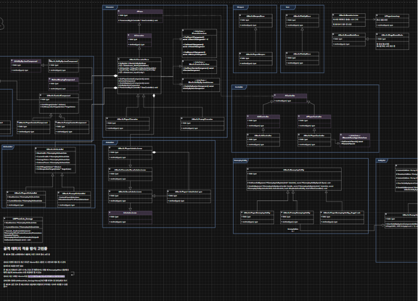
크게 보기 ↗아이템의 생성, 보유 상태, 장착 효과를 나누고 공통 함수와 이벤트로 연결했습니다.
아이템 생성과 장착 정보는 게임 진행과 UI에서 함께 사용했습니다. 기능을 확장할 때 수정할 부분을 구분할 수 있도록 생성 / 보유 / 효과 적용의 책임을 분리했습니다.
Database Subsystem은 데이터 조회와 생성, Inventory Subsystem은 보유 목록과 장착 슬롯을 담당합니다. 캐릭터에 효과를 적용하거나 제거하는 작업은 Equipment Component에 두고, Subsystem은 UGameInstanceSubsystem으로 구성했습니다.
룬은 현재 층에 맞춰 생성하는 함수와 세트·등급을 지정하는 함수를 함께 제공했습니다. 실제 진행 규칙을 사용하거나 원하는 조건을 직접 만들 수 있어 기능 확장과 테스트에 같은 구조를 활용했습니다.
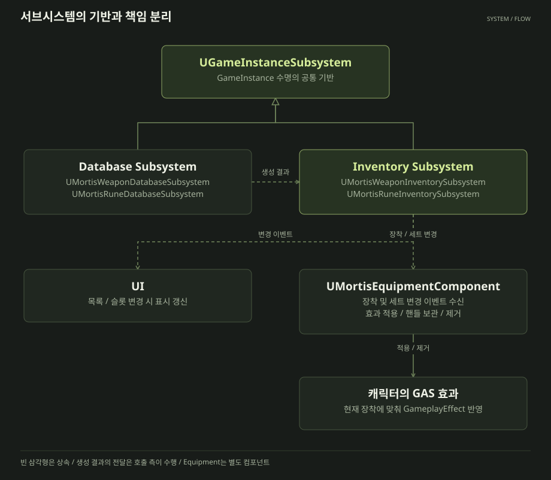
크게 보기 ↗Equipment Component는 Database와 Inventory Subsystem을 가져온 뒤, 장착·해제·세트 변경 이벤트를 효과 처리 함수에 연결합니다. 생성과 보유 상태는 Subsystem에 두고 캐릭터 효과는 이 컴포넌트에서 갱신합니다.
RuneDB = GI->GetSubsystem<UMortisRuneDatabaseSubsystem>();
check(RuneDB);
RuneInv = GI->GetSubsystem<UMortisRuneInventorySubsystem>();
check(RuneInv);
// … 중간 생략 …
RuneInv->OnEquippedRuneAdded.AddDynamic(this, &UMortisEquipmentComponent::ApplyRuneEffect);
RuneInv->OnEquippedRuneRemoved.AddDynamic(this, &UMortisEquipmentComponent::RemoveRuneEffect);
RuneInv->OnActivatedRuneSetsChanged.AddDynamic(this, &UMortisEquipmentComponent::UpdateRuneSetBonus);가장 크게 체감한 효과는 디버깅과 기능 테스트가 쉬워졌다는 점입니다. 테스트용 BP에서 Subsystem을 가져와 생성 / 추가 / 장착 함수를 바로 호출하고, 세트와 등급을 지정해 필요한 조건의 룬을 만들었습니다.
협업에서는 C++와 BP 양쪽에서 사용할 공개 함수와 변경 이벤트를 공유했습니다. UI 담당 팀원은 해당 함수로 동작을 연결하고, 이벤트를 받아 화면을 갱신했습니다.
보유 목록의 추가·제거와 장착 슬롯의 변경은 별도 이벤트로 구분했습니다. 팀원과 장착 방식을 협의해 필요한 화면 요소가 해당 변경을 받도록 연결하고, 구조를 수정한 뒤에는 같은 테스트 함수로 다시 확인했습니다.
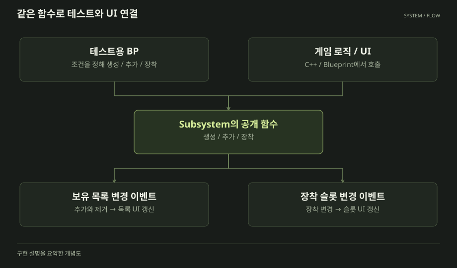
크게 보기 ↗C++의 공개 함수와 BlueprintCallable 함수를 동일하게 사용하고, 장착 및 세트 변경은 BlueprintAssignable 이벤트로 전달합니다.
UPROPERTY(BlueprintAssignable, Category = "Mortis|Rune")
FMortisOnEquippedRuneAdded OnEquippedRuneAdded;
UPROPERTY(BlueprintAssignable, Category = "Mortis|Rune")
FMortisOnEquippedRuneRemoved OnEquippedRuneRemoved;
UPROPERTY(BlueprintAssignable, Category = "Mortis|Rune")
FMortisOnActivatedRuneSetsChanged OnActivatedRuneSetsChanged;
// … 중간 생략 …
UFUNCTION(BlueprintCallable, Category = "Mortis|Rune")
bool AddRune(const FMortisRuneInstance& NewRune);
UFUNCTION(BlueprintCallable, Category = "Mortis|Rune")
bool EquipRune(int32 SlotIndex, const FMortisRuneInstance RuneInstance);
UFUNCTION(BlueprintCallable, Category = "Mortis|Rune")
bool UnequipRune(int32 SlotIndex);플레이어의 동작 제어부터 무기와 룬 효과, 피해 계산까지 같은 전투 흐름 안에서 다뤘습니다.
입력과 상태를 GameplayTag로 구분하고, UMortisAbilitySystemComponent에서 입력 태그와 일치하는 어빌리티를 선택했습니다. InputTag.Toggle.LockOn은 재입력 시 취소하고, InputTag.Hold.Ability.Sprint와 SuperSprint는 입력을 놓을 때 취소하도록 처리했습니다.
무기 장착과 해제 시 어빌리티를 교체해도 입력을 전달하는 공통 흐름은 유지했습니다. UMortisANS_ApplyTag로 동작 구간에 상태 태그를 부여해 락온 회전 등 다른 기능에서도 현재 행동을 판단하도록 했습니다.
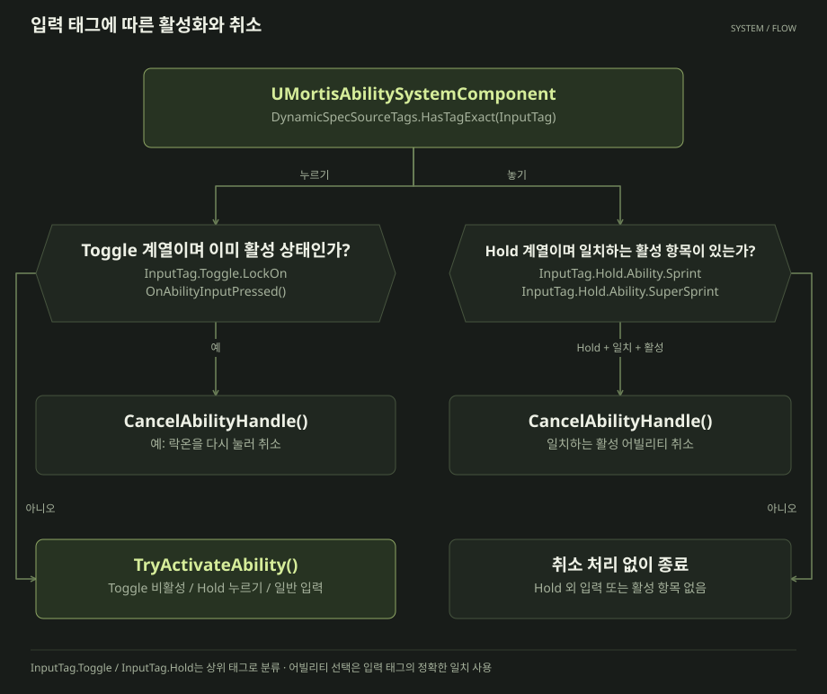
크게 보기 ↗OnAbilityInputPressed(): Toggle 계열 입력의 어빌리티가 활성 상태이면 취소하고, 그렇지 않으면 활성화를 시도합니다.
if (InputTag.MatchesTag(MortisGameplayTags::InputTag_Toggle) && AbilitySpec.IsActive())
{
CancelAbilityHandle(AbilitySpec.Handle);
break;
}
else
{
TryActivateAbility(AbilitySpec.Handle);
break;
}무기 스킬마다 필요한 동작은 달랐지만 비용과 종료 처리는 공통이었습니다. GA_Player_Skill_Base에 이를 모으고 DoSkillBehaviour에서 개별 동작을 구현했습니다. 일부는 근접 공격과 회복 몽타주를 연결하고, 다른 스킬은 락온 유무에 따라 조준해 투사체 세 개를 생성합니다.
룬은 SetByCaller로 수치를 전달하고 적용한 효과의 핸들을 저장했습니다. 2 / 4 / 6개 세트에서는 현재 장착 수와 이미 적용된 단계를 비교해 변경된 단계만 갱신합니다. 4개에서 6개가 되면 기존 효과를 유지하며 6개 효과만 추가하고, 다시 4개가 되면 저장한 핸들로 해당 효과를 제거합니다.
조건부 효과는 전투 이벤트를 받은 룬 어빌리티에서 판정했습니다. 흐름의 룬은 물리·마법 교대 적중으로 중첩을 쌓고, 5중첩 이벤트로 상위 세트 버프를 적용한 뒤 스킬 적중 시 해제합니다. 공격은 이벤트를 전달하고 룬이 발동 조건을 처리하도록 역할을 나눴습니다. 팀원이 작성한 룬 기획을 이 구조로 구현했습니다.
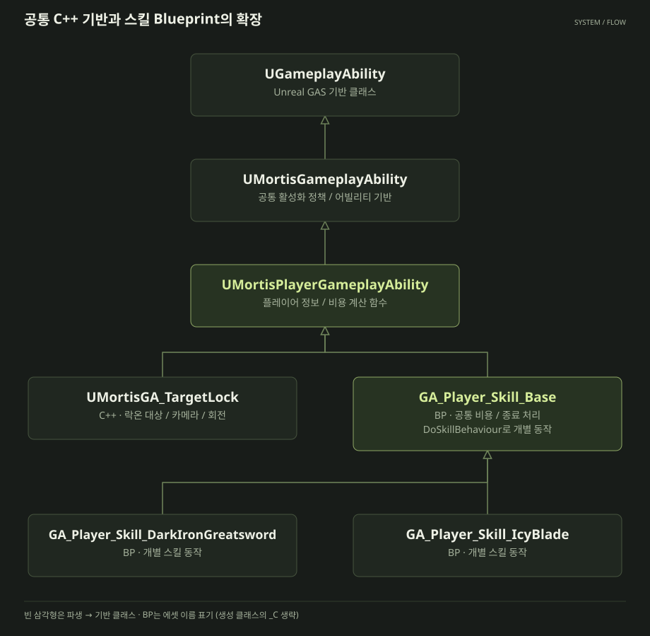
크게 보기 ↗DesiredTierCounts는 현재 장착 수로 충족하는 세트 단계입니다. 조건에서 빠진 단계만 제거하고, 아직 적용하지 않은 단계만 추가해 기존 효과를 불필요하게 다시 적용하지 않습니다.
// 없어져야 할 티어만 제거
for (int32 i = SetRuntime.AppliedTiers.Num() - 1; i >= 0; --i)
{
const int32 AppliedCount = SetRuntime.AppliedTiers[i].ActivateCount;
if (!DesiredTierCounts.Contains(AppliedCount))
{
RemoveSetTier(SetRuntime, AppliedCount);
}
}
// 새로 필요한 티어만 추가
for (const FMortisSetTierDef& TierDef : SetRow->TierDefs)
{
if (!DesiredTierCounts.Contains(TierDef.ActivateCount))
continue;
if (HasAppliedTier(SetRuntime, TierDef.ActivateCount))
continue;
ApplySetTier(TierDef, SetRuntime);
}무기와 능력치로 정하는 값은 여러 공격이 함께 사용하고, 모션 계수와 저항은 적중한 공격 및 대상에 따라 달라집니다. 그래서 기본 피해량은 MMC, 적중 조건은 ExecutionCalculation에서 계산하도록 나눴습니다.
MMC는 무기 공격력과 힘 / 기량 / 지혜, 무기별 보정 계수로 BaseDamage를 만듭니다. ExecutionCalculation은 이 값에 모션 계수와 피해 보너스, 대상 저항을 반영하고 IncomingDamage로 전달합니다. 이후 AttributeSet이 체력 감소와 사망을 처리합니다.
공식과 초기 수치는 ChatGPT와 정리했습니다. 수식이 확정된 뒤에는 엑셀을 공유해 팀원과 여러 값을 대입하고, 몬스터 체력과 무기 피해량을 조정했습니다.
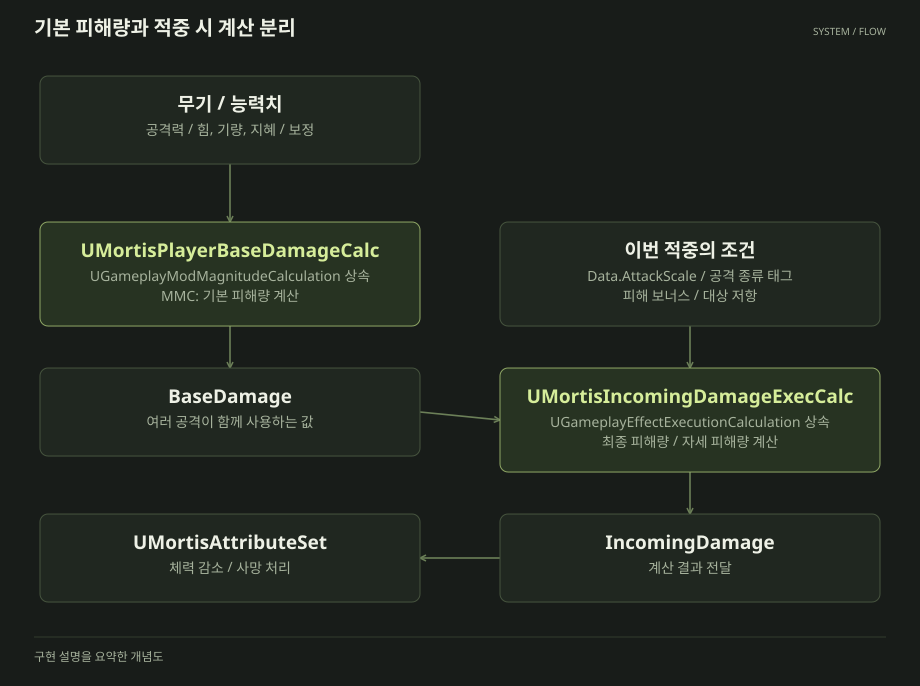
크게 보기 ↗MMC에서 무기 공격력에 근력·기량·지혜의 보정치를 합산합니다. 보정치 합을 P로 나눈 뒤 1을 더해 무기 공격력에 곱하며, 결과를 공통 기본 피해량으로 사용합니다.
constexpr float K = 100.0f;
constexpr float P = 100.0f;
// … 중간 생략 …
const float BaseDamage
= WeaponDamage * (1 + (
((K * Str) / (K + Str)) * StrCoef +
((K * Dex) / (K + Dex)) * DexCoef +
((K * Int) / (K + Int)) * IntCoef
) / P);
return BaseDamage;공격 종류별 보너스와 저항을 고르고 Data.AttackScale의 모션 계수를 반영해 최종 피해량을 계산합니다.
float Resist = 0.0f;
float Bonus = 1.0f;
const float AllResist = GetCapturedOrZero(ExecutionParams, GetMortisDamageCapture().ResistAllDef, EvaluateParameters);
Bonus += AllTypeBonusDamage;
if (EffectSpec.GetDynamicAssetTags().HasTagExact(MortisGameplayTags::Data_AttackType_Pierce)) { Resist = ResistPierce; Bonus += PierceBonus; }
else if (EffectSpec.GetDynamicAssetTags().HasTagExact(MortisGameplayTags::Data_AttackType_Blunt)) { Resist = ResistBlunt; Bonus += BluntBonus; }
else if (EffectSpec.GetDynamicAssetTags().HasTagExact(MortisGameplayTags::Data_AttackType_Slash)) { Resist = ResistSlash; Bonus += SlashBonus; }
else if (EffectSpec.GetDynamicAssetTags().HasTagExact(MortisGameplayTags::Data_AttackType_Magic)) { Resist = ResistMagic; Bonus += MagicBonus; }
if (EffectSpec.GetDynamicAssetTags().HasTagExact(MortisGameplayTags::Data_AttackType_Skill)) { Bonus += SkillBonus; }
// 모션 계수
const float MotionCoef = EffectSpec.GetSetByCallerMagnitude(MortisGameplayTags::Data_AttackScale, false, 1.f);
float IncomingDamage = BaseDamage * MotionCoef * Bonus * (1.0f - Resist - AllResist);
IncomingDamage = FMath::Max(0.0f, IncomingDamage);플레이 테스트의 피드백을 바탕으로 시야와 다음 행동의 연결을 다듬고, 입력과 락온 대상에 맞춰 공격 방향을 보정했습니다.
초기 락온은 적을 바라보는 방식이었지만 시야가 불편하고 대치감이 약하다는 피드백을 받았습니다. 엘든링 등의 구도를 분석해 플레이어와 적이 함께 보이도록 좌우 Offset과 거리별 배치를 조정했습니다.
적의 좌우 위치는 수평 방향과 카메라 오른쪽 방향의 내적으로 판단했습니다. 중앙 부근에서는 기준값을 두어 구도가 자주 뒤집히지 않도록 하고, 거리별 Offset과 카메라 이동·회전에 보간을 적용했습니다. 변경 후 테스트에서는 시야와 대치 구도에 긍정적인 평가를 받았습니다.
카메라 추적과 캐릭터 회전은 별도로 처리했습니다. State.Action.Attacking은 적 방향 회전을 우선하고, Ability.Action.Roll 또는 Ability.Action.Sprint 상태에서는 카메라만 적을 추적하며 캐릭터는 이동 방향으로 회전합니다. 현재 행동에 맞는 방향으로 움직이면서도 락온 대상은 화면에 유지하도록 구성했습니다.
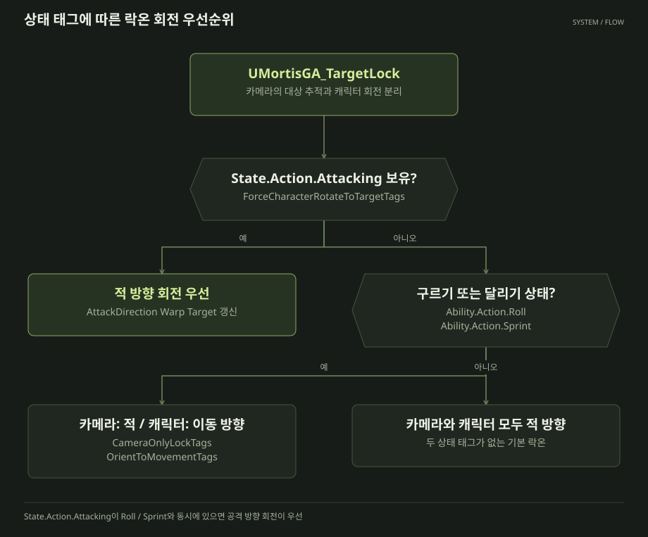
크게 보기 ↗강제 회전 태그를 먼저 확인한 뒤 카메라만 추적할지, 캐릭터를 이동 방향으로 돌릴지 판단합니다.
if (HasAnyMatchingTagOnActor(PlayerCharacter, ForceCharacterRotateToTargetTags))
return true;
return !HasAnyMatchingTagOnActor(PlayerCharacter, CameraOnlyLockTags);
}
bool UMortisGA_TargetLock::ShouldOrientRotationToMovement(const AMortisPlayerCharacter* PlayerCharacter) const
{
if (!PlayerCharacter)
return false;
if (HasAnyMatchingTagOnActor(PlayerCharacter, ForceCharacterRotateToTargetTags))
return false;
return HasAnyMatchingTagOnActor(PlayerCharacter, OrientToMovementTags);공격과 자세를 회복하는 동작을 별도 몽타주로 나누고, 회복 중 다음 행동으로 이어지도록 구성했습니다. AnimNotifyState로 입력 허용 구간을 정해 가장 최근 입력 하나를 다음 행동으로 예약합니다.
일반 공격 / 무기 스킬 / 구르기 중 마지막 입력을 BufferedInputTag에 저장하고, 공격 어빌리티가 종료되면 ASC에 전달한 뒤 버퍼를 비웁니다. 회복 몽타주는 공격 종료 후에도 이어지되 이동 입력이 들어오면 중단하도록 해, 회복 중 공격이나 이동으로 전환할 수 있게 했습니다.
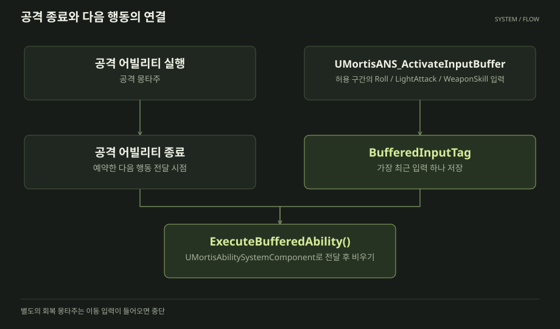
크게 보기 ↗허용 구간의 마지막 입력을 BufferedInputTag에 저장하고, ExecuteBufferedAbility()에서 실행한 뒤 비웁니다.
if (bCanBufferInput && IsBufferableAbility(InputTag))
{
BufferedInputTag = InputTag;
return;
}
MortisAbilitySystemComponent->OnAbilityInputPressed(InputTag);
// 입력 처리 부분과 실행 함수를 발췌
void AMortisPlayerCharacter::ExecuteBufferedAbility()
{
if (!BufferedInputTag.IsValid()) return;
MortisAbilitySystemComponent->OnAbilityInputPressed(BufferedInputTag);
BufferedInputTag = FGameplayTag::EmptyTag;
}초기 구현부터 공격 중에도 입력에 맞춰 방향을 조절할 수 있는 조작감을 고려해 Motion Warping을 적용했습니다. 이동 입력과 락온 대상에 따라 공격 방향을 보정하도록 구성했습니다.
이후 알파 테스트에서 회전 속도가 느려 원하는 방향으로 공격한다는 감각이 부족하다는 피드백을 받았습니다. 방향 보정 기능이 동작하는 것만으로는 충분하지 않다는 점을 확인하고, 피드백을 바탕으로 공격 방향 전환의 조작감을 추가로 개선했습니다.
이동 입력에서는 카메라의 수평 회전으로 월드 이동 방향을 계산해 AttackDirection Warp Target에 반영합니다. 락온 중 State.Action.Attacking처럼 적 방향 회전을 우선하는 상태에서는 대상을 향하는 Yaw로 갱신하며, 현재 위치와 목표 회전을 함께 전달합니다.
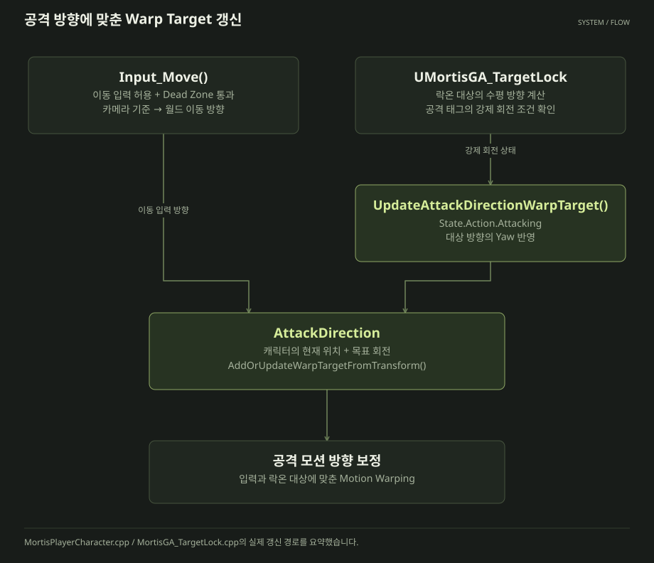
크게 보기 ↗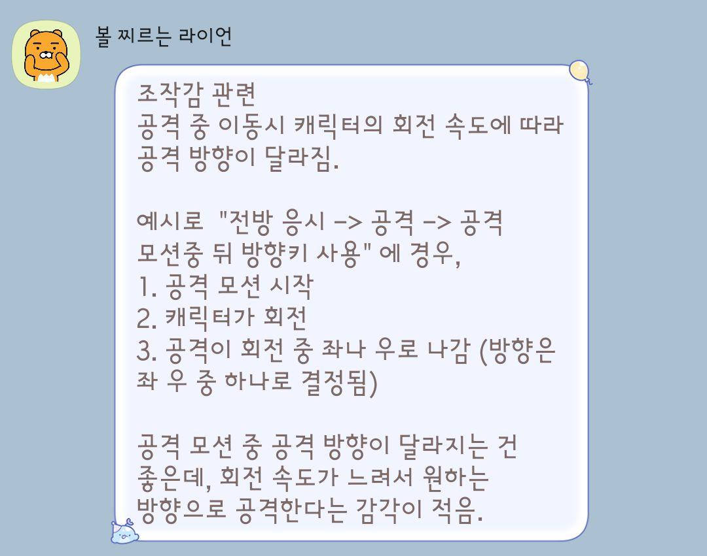
크게 보기 ↗현재 위치는 유지하고 전달받은 Yaw를 AttackDirection의 목표 회전으로 등록합니다. 락온 공격 중에는 MortisGA_TargetLock.cpp에서 이 함수를 호출합니다.
void AMortisPlayerCharacter::UpdateAttackDirectionWarpTarget(const FRotator& InRotation)
{
if (!MotionWarpingComponent)
return;
const FTransform WarpTargetTransform(
FRotator(0.f, InRotation.Yaw, 0.f),
GetActorLocation()
);
MotionWarpingComponent->AddOrUpdateWarpTargetFromTransform(
TEXT("AttackDirection"),
WarpTargetTransform
);
}친구들과 진행한 알파 테스트에서 비전투 구간의 이동 속도가 느리다는 피드백을 받았습니다. 엘든 링 밤의 통치자처럼 빠르게 이동할 수 있는 달리기를 제안받아, 탐색과 구간 이동에 사용할 빠른 달리기를 추가했습니다.
일반 달리기와 SuperSprint를 별도 어빌리티로 구성하고 기존 Hold 입력 처리에 연결했습니다. 새로운 이동 기능도 같은 태그 기반 입력 흐름으로 실행하고, 입력을 놓으면 종료하도록 했습니다.
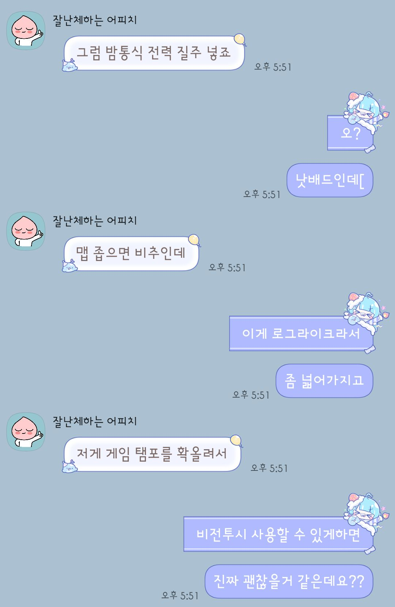
크게 보기 ↗Sprint와 SuperSprint는 Hold 계열 입력 태그로 구분했습니다. 입력을 놓으면 해당 태그의 활성 어빌리티를 취소해 빠른 달리기에도 기존 입력 처리 흐름을 사용합니다.
void UMortisAbilitySystemComponent::OnAbilityInputReleased(const FGameplayTag& InputTag)
{
if (!InputTag.IsValid() || !InputTag.MatchesTag(MortisGameplayTags::InputTag_Hold)) return;
for (const FGameplayAbilitySpec& AbilitySpec : GetActivatableAbilities())
{
if (AbilitySpec.GetDynamicSpecSourceTags().HasTagExact(InputTag) && AbilitySpec.IsActive())
{
CancelAbilityHandle(AbilitySpec.Handle);
break;
}
}
}부족한 애니메이션을 보완하고 에셋의 분위기를 맞추는 데 AI 도구를 활용했습니다. 데미지 수식은 ChatGPT와 정리한 뒤 팀원과 수치를 조정했습니다.
기존 에셋만으로 확보하기 어려웠던 일부 동작을 FreeMoCap 모션캡처로 제작해 부족한 애니메이션을 보완했습니다.
여러 석상을 Sketchfab 등에서 각각 구하다 보니 에셋마다 표현하는 분위기가 달랐습니다. 개별 모델을 같은 게임에 배치했을 때 시각적 통일감이 깨져 게임의 분위기를 해치는 문제가 있었습니다.
이를 해결하기 위해 Meshy AI로 서로 비슷한 분위기의 석상을 생성해 적용했습니다. 여러 석상을 함께 배치해도 전체적인 분위기를 유지할 수 있었던 경험입니다.
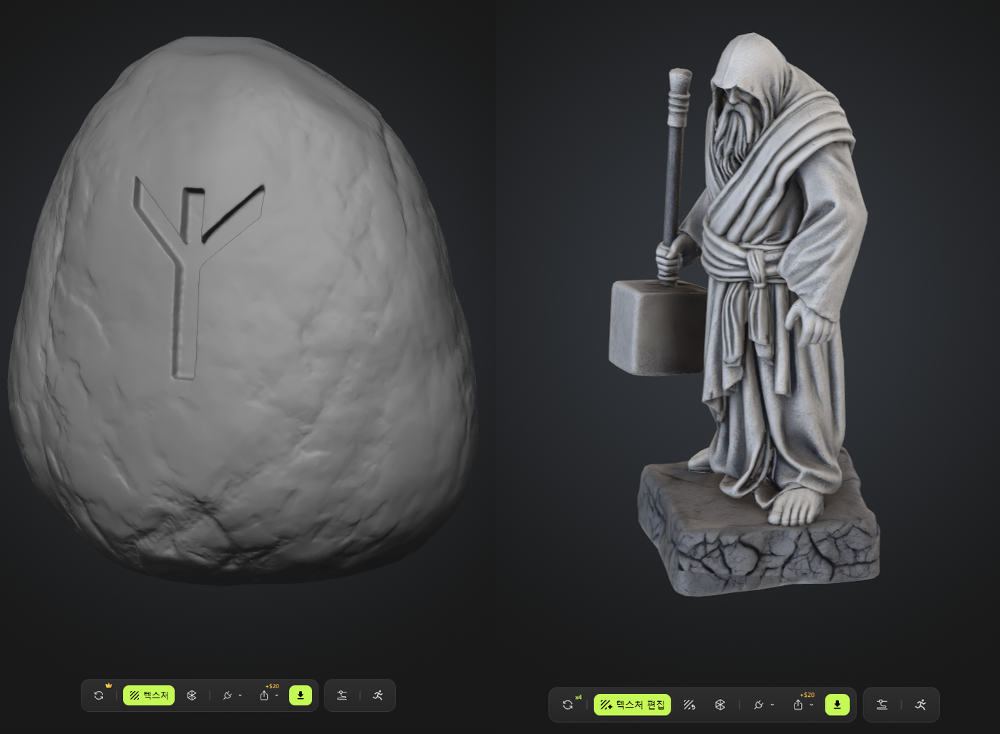
크게 보기 ↗기획 단계의 데미지 공식과 초기 수치 설계에 ChatGPT를 활용했습니다. 수식 확정 후의 밸런스는 엑셀을 공유해 팀원과 조정했습니다.
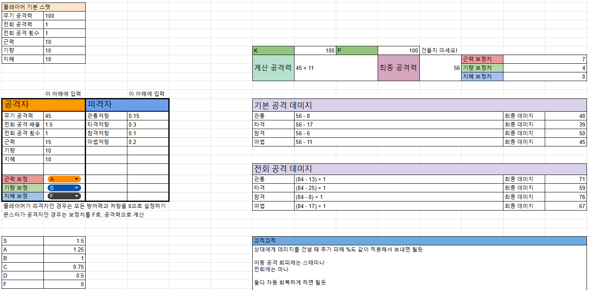
크게 보기 ↗주변 상호작용 대상을 수집하고 시선 방향과 거리로 우선순위를 정했습니다. 여러 대상이 있으면 좌우 각도순으로 전환하며, 선택 표시와 대상의 어빌리티 실행을 연결했습니다.
컨트롤러의 수평 시선을 기준으로 대상 방향과의 내적, 대상까지의 거리를 점수로 바꿉니다. 정면에 가깝고 거리가 짧을수록 높은 점수를 주고, GetBestCandidate()가 가장 높은 대상을 선택합니다.
FVector Forward = OwnerPawn->GetActorForwardVector();
if (const AController* Controller = OwnerPawn->GetController())
{
const FRotator ControlRot = Controller->GetControlRotation();
const FRotator YawRot(0.f, ControlRot.Yaw, 0.f);
Forward = FRotationMatrix(YawRot).GetUnitAxis(EAxis::X);
}
const FVector ToTarget = Target->GetActorLocation() - OwnerPawn->GetActorLocation();
const float Distance = ToTarget.Length();
const float Dot = FVector::DotProduct(Forward, ToTarget.GetSafeNormal());
// 정면일수록, 가까울수록 우선
return (Dot * 10000.f) - (Distance * 0.5f);현재 런의 골드와 진행 상태는 RunState Subsystem, 다음 실행에도 남길 성장 정보는 MetaProgression Subsystem과 SaveGame으로 나눴습니다. UI는 공통 함수와 변경 이벤트로 상태를 확인합니다.
런을 넘어 유지할 정보만 SaveGame에 기록합니다. 기억파편, 해금·선택한 성장 항목, 룬 슬롯 강화, 튜토리얼 완료 여부를 저장하고 현재 런의 골드·층 정보는 RunState에서 별도로 관리합니다.
SaveGame->MemoryFragments = MemoryFragments;
SaveGame->UnlockedExperienceTags = UnlockedExperienceTags;
SaveGame->SelectedExperienceTag = SelectedExperienceTag;
SaveGame->RuneSlotUpgradeLevel = RuneSlotUpgradeLevel;
SaveGame->bHasCompletedTutorial = bHasCompletedTutorial;
UGameplayStatics::SaveGameToSlot(SaveGame, SaveSlotName, SaveUserIndex);사망 시 입력을 제한하고 기억파편 비용을 확인해 부활을 처리했습니다. 부활 비용은 사용 후 증가하고 새 런에서 초기화됩니다. 무기 Trail과 투사체 / 이펙트는 NotifyState와 공격 구간에 맞춰 연결했습니다.
기억파편이 부족하면 부활 비용 처리를 중단하고, 충분하면 차감한 뒤 다음 비용을 늘립니다. 정수 범위를 넘지 않도록 상한을 확인하며 새 런의 ResetRunState()에서 비용을 초기화합니다.
if (MetaProgression->GetMemoryFragments() < CurrentReviveCost)
return false;
MetaProgression->AddMemoryFragments(-CurrentReviveCost);
if (ReviveCostMultiplier > 1)
{
if (CurrentReviveCost > MAX_int32 / ReviveCostMultiplier)
{
CurrentReviveCost = MAX_int32;
}
else
{
CurrentReviveCost *= ReviveCostMultiplier;
}
}
return true;